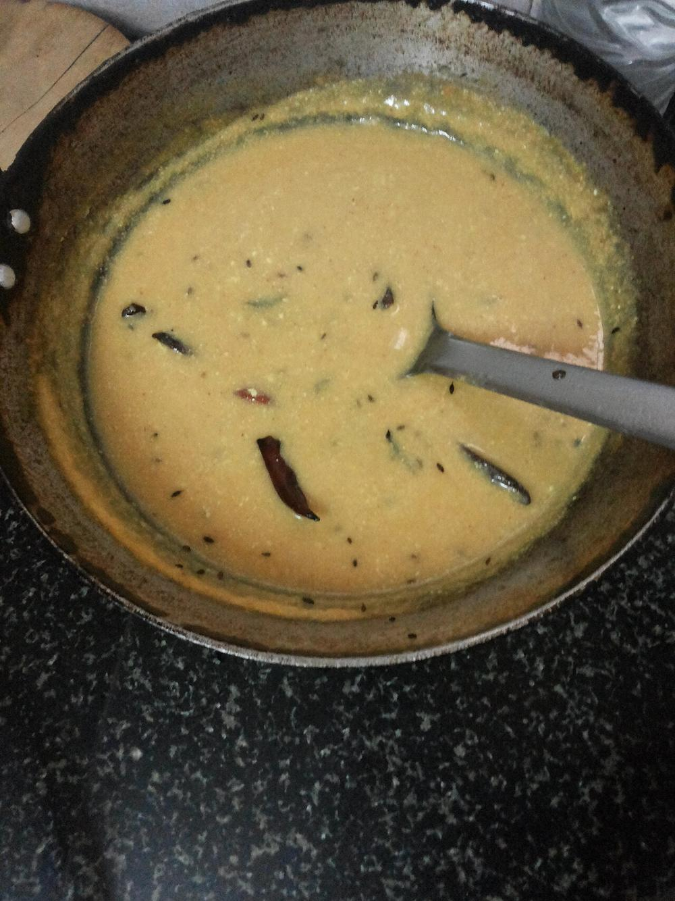

Contains: dairy
Ingredients
Quantities for 4.
- 4 tbsp, heaped Besan
- 800ml, sour Buttermilkday-old and tart is what you want; sweet buttermilk makes a flat kadhi
- 3 tbsp Ghee
- 1 tsp Cumin Seeds
- 1/2 tsp Mustard Seeds
- 1/4 tsp Fenugreek Seedsjust a few seeds. More turns it bitter
- 1/4 tsp Asafoetidause compounded-free hing to keep this gluten-free
- 3, broken Dried Red Chilli
- 2, slit Green Chilli
- 1/2 tsp Turmeric
- 1 tsp Chilli Powder
- 10 Curry Leavesoptional
- 2 tbsp, chopped Coriander Leavesoptional
- to taste Salt
Cookware
stovetop, kadhai
Before you start
- Leave the buttermilk out for a few hours, or overnight in a warm kitchen, to sour it properly. Rajasthani kadhi is meant to be sharp.
- Whisk the besan into a little of the buttermilk first to make a lump-free slurry, then add the rest. Dumping besan into all the liquid guarantees lumps.
Method
- Whisk the besan, turmeric, chilli powder and salt into the buttermilk until completely smooth. Strain it if you can see any lumps.Ten seconds with a sieve now saves a lumpy kadhi later.
- Pour into a heavy pan and bring to a boil over medium heat, stirring constantly in one direction.Stop stirring before it boils and it will split into curds and whey.
- As soon as it boils, drop the heat to low and simmer 15 minutes, stirring every couple of minutes, until it thickens slightly and loses its raw besan smell.
- Add the slit green chillies and cook another 2 minutes.
- In a small pan heat the ghee, crackle the mustard seeds, then the cumin, then the fenugreek seeds for 10 seconds.
- Add the broken red chillies, curry leaves and hing, and pull off the heat the moment the chillies darken.Fenugreek and hing burn in seconds. Have the kadhi ready and waiting.
- Pour the tempering over the kadhi, cover for 2 minutes to trap the aroma, then stir through with the coriander leaves.
- Serve loose and pourable over steamed rice, or with bajre ki roti.
Storage
Keeps 3 days refrigerated and thickens as it sits. Reheat on low with a splash of water or buttermilk, stirring; a fresh tadka on top revives it.
Nutrition Good estimate
| Per serving307 g | Per 100 g | |
|---|---|---|
| Calories | 254+ kcal | 83+ kcal |
| Protein | 12.1+ g | 4+ g |
| Carbohydrate | 23.9+ g | 8+ g |
| of which sugars | 14.1+ g | 5+ g |
| Fibre | 4.0+ g | 1+ g |
| Fat | 13.5+ g | 4+ g |
| of which saturated | 7.4+ g | 2+ g |
| of which unsaturated | 4.9+ g | 2+ g |
The + means ingredients given to taste rather than by weight are counted as zero, so the true figure is a little higher than shown. Worked out from the listed quantities; most of the ingredient list could be weighed. Ingredients given to taste rather than by weight are counted as zero, so the real figure is a little higher than this. The + says so. Some ingredients have no exact match in the nutrient database and use the nearest equivalent: asafoetida, curry leaves. Estimated from raw ingredients using USDA FoodData Central. Cooking changes are not modelled, and added salt is excluded, so sodium is not given.
Recipe v1.0.0, last updated 2026-07-31. Curated for Khaana and kept under version control.